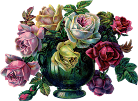

Заголовок 1
Заголовок 3
Такой многолетник, как лилия вырастает из луковицы. Луковицы могут иметь весьма небольшую величину. Так, их диаметр может быть равен всего 1 см. Но в природных условиях встречаются очень большие луковицы, диаметр которых может достигать примерно 30 см. Луковички могут иметь различную форму: яйцевидную либо шарообразную. На побегах растения располагается большое количество листовых пластин. Высота стеблей может варьироваться от 50 до 250 см (зависит от вида и сорта). У некоторых видов листовые пластины закручиваются по спирали, а у иных ― они просто собраны в листовую прикорневую розетку.
У растения имеется одно соцветие цилиндрической формы, в состав которого входят все цветки. В состав соцветия, как правило, входит до 16 цветков. Бывает, что на одном растении вырастает до 30 цветков, при этом они распускаются не сразу, а постепенно. При этом цветение начинается с верхней части и постепенно переходит вниз. В среднем каждый цветок может прожить около 8 суток. В центральной части цветочков располагается пестик и 6 тычинок. Форм самого цветка имеется большое количество. В диких условиях можно повстречать лилию как белого, так и синего окраса, а еще розового, абрикосового и оранжевого цвета. Также цветки могут быть многоцветными. Появление плодов на растении происходит в октябре месяце. Они представляют собой коробочки, внутри которых находятся семена.
| 1
| 2 |
3 |
4 |
5 |
6
|
| 7 |
8 |
© Любашевська Олена , 2018